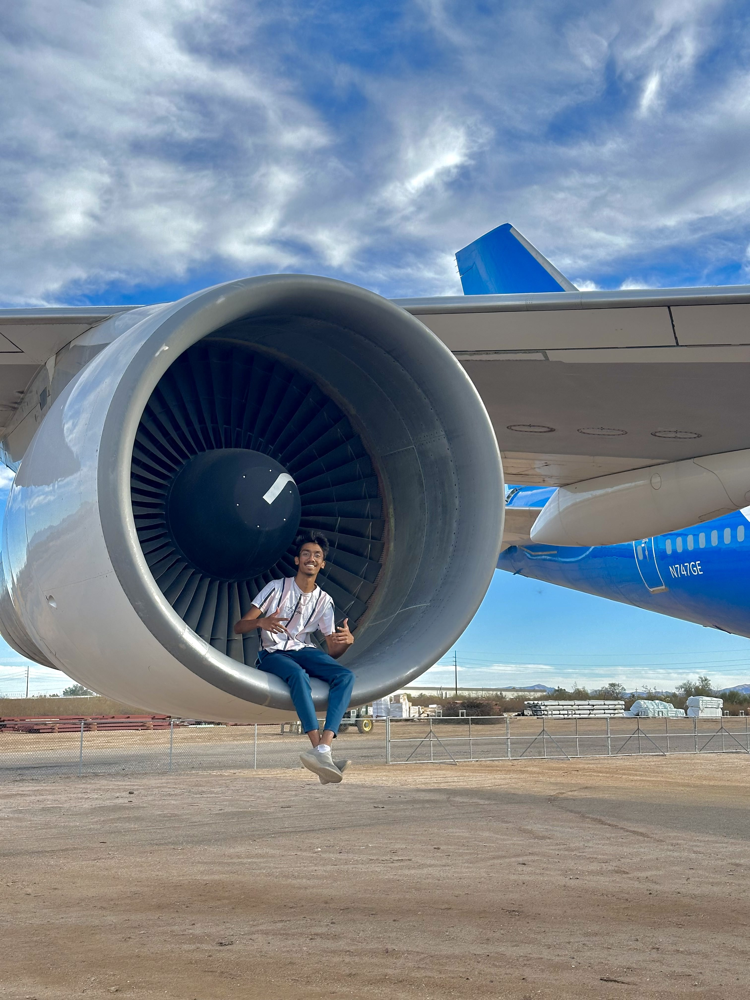

Adam Dsouza was born in Hyderabad, India, and is a Computer Science graduate from Arizona State University. Growing up, Adam enjoyed
participating in a diverse range of activities, ranging from sports to dabbling in the arts. He enjoyed taking part in competitions across
multiple fields and excelling at what he did. Being an avid reader from a young age, Adam grew to enjoy gaining new knowledge and finding ways
to apply what he learned in the real world.
Being a very sociable and curious person, Adam enjoyed meeting new people from diverse backgrounds, and from places around the world. This
desire to expand his knowledge of the world and acquire novel viewpoints prompted him to pursue the option of studying overseas. His decision
to pursue Computer Science was backed by his interest in problem-solving and finding unique ways to improvise. Working in a team environment
with other individuals helped mold his personality and take charge of situations when faced with a problem.
Apart from his interests in coding, sketching, and reading, Adam also enjoys playing sports and spending time in nature. He enjoys working
just as hard as he does taking time off, but is dedicated to putting in as much effort as necessary to achieve his goals. His future goals are
to graduate with a Master's degree in Marketing and have multiple successful startups by the age of 40. While his goals may seem lofty, he
knows the work that he will need to put in to make his dreams a reality will require him to never give up and keep pushing forward regardless
of the circumstances.